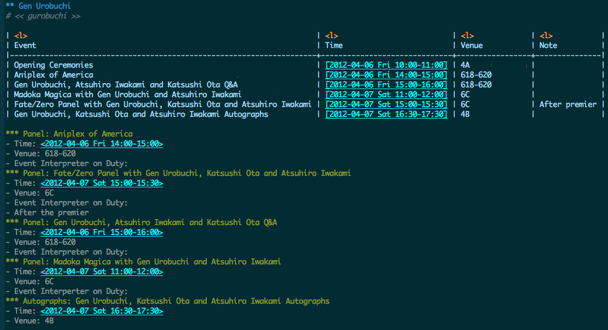

Emacs Articles
Table of Contents
Org-mode at Sakura-Con
This article explains use of Org-mode in a context of convention management.
Who am I?
I am Japanese Guest Manager appointed by relations department of Sakura-Con 2012. My duty at Sakura-Con involves management of Japanese guests of honor for Sakura-Con 2012; everything related to Japanese guests, from schedule managements, human resources, to the field management of the team consisting of a little less than 30 managing 17 guests of honor and their associates – about 60 in total. The team consists of Japanese guest liaisons assigned to each guest as well as 3 of event interpreters assigned to events such as panels.
The team managed more than 80 hours of programming spanning three days as well as times outside of convention hours.
Objective
Managing Japanese guest relations at Sakura-Con involved multiple considerations. Here are some aspects of such managements:
Sakura-Con used its own scheduling system, which is mainly used to schedule events on the global calendar, thus making it possible to coordinate scheduling between multiple departments. You can imagine this as a big conference room scheduling system. Unfortunately, the way the schedule is presented and solely chronological and was very hard to glance. (It was better designed to see what time tables are open but not designed to follow what each resource are assigned for.) Japanese guest relations required customized solution as we had to need of further digesting this information.
Japanese guest relations issues schedule sheet which consists of formatted schedule for each guest of honor as well as staff. This process was assigned to one of my staff, however this had to be handled somewhat concurrently while schedules were being finalized.
Aside from liaisons, Japanese guest interpreters had their own assignment. It is because they were assigned to events rather than guests. This presents interpreters different set of requirements in their scheduling. As the schedule called for many events concurrently occurring but greatest number of such concurrency were constrained by available resources. This also had to be updated on the fly when pertinent changes occur in the scheduling process.
Sakura-Con 2012 particularly hired many new staff due to its number of guests. Each of member had to be accounted for their availability for as well as number of "checklist" for signing them up.
Each staff is assigned to guest to manage. Assignments are done taking their ability in account as well as their preferences.
Management Using Org-mode
During the preparation of Sakura-Con 2012, there were so many type of information to process. Because Org-mode allows variety of output from its org file, it helped to produce output necessary for consumption by our staff.
Schedules had to be constructed so it is easy to glance as well as to have detailed information within. To carry out this, under heading for each guest, information contained table of events, which contained name of the event as well as time (with inactive timestamps) and venue. I can then sort this table based on the time, which generates chronological time table to each guest.
Furthermore, the list required some more information, therefore, it would contain subheading which lists each event by its type, but alphabetically for easy lookup. This heading had active timestamp. This allowed each of those entry to be exported as iCal calendar file; this file can then be used by interpreters to schedule their assignment.
The following is the sample segment from the real schedule: (Due to confidentiality issues, some of information from the example are eradicated and does not show real schedule of the convention.)

Example of the schedule entry
Yes, this is probably redundant having two representation of same event, but given calendar output from table seems to be not possible, this was a middle ground I had to reach. Also having these sectional event subheading means they could be marked with various TODO field. I used this feature to label status of each event to signifying events still requiring changes.
From this file, I could derive HTML output for printed schedule as well as calendar file for interpreter schedules.
Other than some errors originating from input mistakes, the process supported the preparation effort very well.
When the convention added a guest, it involved multitude of process, such as guest invitations. These were managed using mainly by checkbox on Org-mode, among with relevant information linked to. Again, all those information could be converted to HTML and other format for sharing.
Staffs are managed same way as guests, except they had different type of checklist. Their contact information as well as interview processes were logged and amended as the process continued. Staff directory was also published utilizing same data compiled in this process.
The Team Website
Utilizing same data set above, the team website containing guest schedules, staff information as well other miscellaneous information could be produced and maintained very rapidly. Utilizing smartphones browser, everything from guest schedule to assignment information could be referenced everywhere there are coverages. While being static site, onsite update to the contents were very simple. Backend featured Git and new revision could be pushed to update the site from local machine. This was mainly done by a laptop with Clear hotspot. I have also designed emergency USB thumbdrive which contains all the necessary tools (including complete version of Emacs, SSH, Git, etc.) which could be used to continue updating the site in the event that laptop would be out of order. Fortunately, I did not have to resort to use it.
The team website was not only utilized by the team itself, but its reference was expanded to entire department as well as relevant personnel outside of the department, logging more than 3500 requests on the convention week alone, which would have been additional inquiry to the department otherwise.
Future Considerations
Org-mode was an integral part of Japanese Guest Relations at Sakura-Con 2012. While model based on static webpage has worked very well for the purpose, perhaps I can perhaps develop or utilize frameworks that can parse org file input to generate format better fit for many of use cases.
Also mobile integration utilizing tools such as MobileOrg was not within the scope of the project, this is certainly something I will want to explore in the future.
Org-mode and Why You Should Consider Using It
Org-mode is certainly best one of many things I've discovered in first 2 months in 2012. Now I use it for anything from note taking, convention management, and even writing full report.
This was great discovery to me, that recently, I have been started a lot of things on the web as well as on more specialized platforms such as Chromebook rather than on traditional PC. Sure I will have to use some type of computer to convert document prepared in Org-mode, more about it later.
Binary Blobs Suck
I have been complaining about various binary blobs in the past. I expressed my hate anything from proprietary format, as well as winmail.dat attached to E-mails. (I'm still seeing that, albeit less often. Hey Microsoft, if you are seeing it push some Windows Update to everyone and get rid of that thing altogether.)
Classic examples are documents generated by any office softwares traditionally had this problem. It started to improve when standardization efforts such as OpenDocument and some sense Office Open XML are introduced in the market. This may have changed significantly in standardized to approach to otherwise proprietary formats that was (and still is) dominating the market, was was very important movement.
However, what these standardization efforts did not solve was accessibility problem. No matter how open those formats are, they would still require use of some extra piece of software, that requires degree of complexity than what you could attain using plain text. TeX (and LaTeX) has been around for years allowing plain text edit, but it was far harder to use than, although, I consider TeX/LaTeX being 100 times better way of creating documents than on Microsoft Word.
Org-mode being plain text, I can be editing the document everywhere: I can do it on PC, I can do it on Mac, I can do it on Chromebook (considering ChromeOS does not have any software packages it is bit cranky to do it with) and I can do it on my phone. Eventually, I will be relying on actual PC to convert, but being able to write documents is very useful aspect of Org-mode and mark up languages in general.
Structured Documents Made Easy
One thing I like about Org-mode (and also TeX/LaTeX) is that it enforces structured documents. I often across many documents E-mail to me that are horribly created document – heading being mere font size change, table of contents written as text, rather than auto generated based on heading information, because it lacks document structure information because of the above.
Sure some people are apparently smart enough to do this properly even when they are using Microsoft Word, but the point is that Org-mode enforces this with positive motivation. By making sure the document has proper format on Org-mode, it makes Org-mode much more useful, as it is outline processor, you will be able to organize contents more efficiently when it is structured.
Project Management Made Easy
Most of things I do at my work is project management. I used to use Microsoft Project, which after I've used it for while, I found it wasn't necessary solution to the problem. Yes, it is perhaps good at making graph that wows management in some companies, but constraints it assume is not always in-line with real life situation. Unless you are working for perfect company, schedule slips, requirements change, which causes heck of changes to the beautiful chart you've made using those project management softwares.
Past few days, I have been working on adjusting events which involves around 80 hours of sessions – Org-mode helped this process such a breeze, because getting the big picture of dependencies was very easy with Org-mode.
And what best, is that reports can be generated to number of format for others to review, which is my next point:
Document Creation Made Easy
Once authoring of the document is completed on Org-mode, it is very easy to generate reports for others to consume. Be it HTML, OpenDocument, LaTeX, etc., all it involve is to export as those format.
It is even possible to create table contains dynamically generated field, much like you can do in Microsoft Excel. It's like text based spreadsheet.
This creates seamless pipeline of information management to document creation based on it.
Shortcomings?
It is fair to say there are some shortcoming to Org-mode. For example, it is harder to embed diagrams on the document. (It's not impossible, but the diagrams need to be created externally.) Documents involving heavy use of diagram and drawing are much better done in applications like Microsoft Powerpoint, Microsoft Visio, or LibreOffice Draw. (And please don't do it on Microsoft Excel!) Other than that, Org-mode is very good all-round information management and document authoring tool.